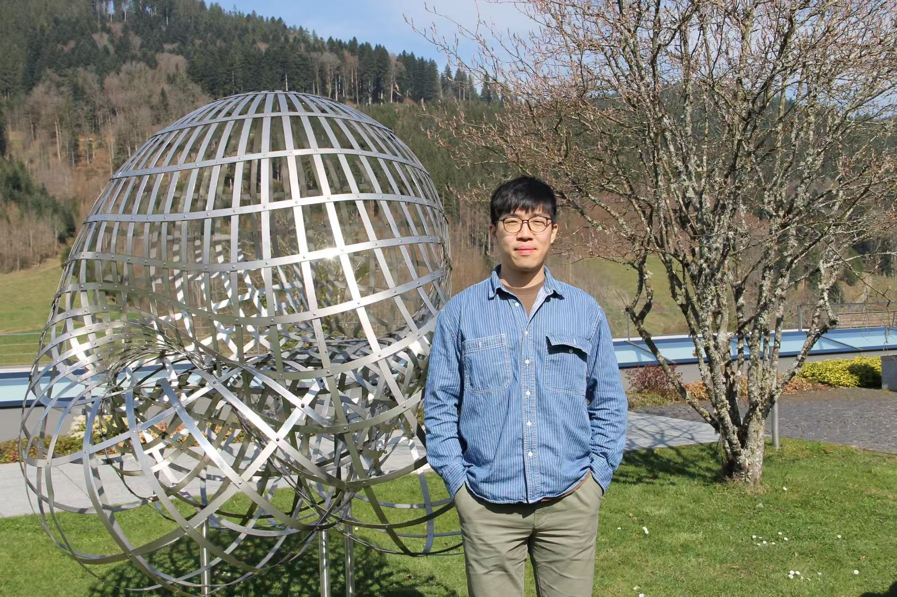

Email: bangxin.wang@uni-hamburg.de

Since October 2024, I have been a PhD student in mathematics at Universität Hamburg, supervised by Ingo Runkel and Azat Gainutdinov. My research is funded by the German Research Foundation (DFG) under the Collaborative Research Center SFB 1624, Higher structures, moduli spaces and integrability. Prior to my doctoral studies, I obtained my Bachelor's degree in electrical engineering and Master's degree in mathematics at ETH Zürich. Originally, I grew up in Wuhan, China.
My research lies at the intersection of topological field theories, higher category theory, and representation theory. I am particularly interested in defects, background fields, and gauging in (non-semisimple) TFTs, and their associated algebraic structures.